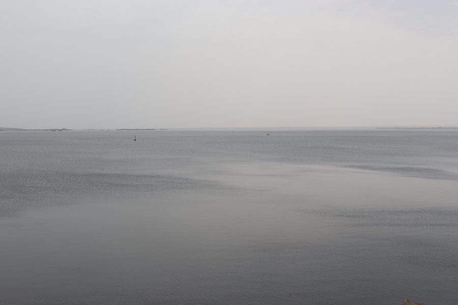
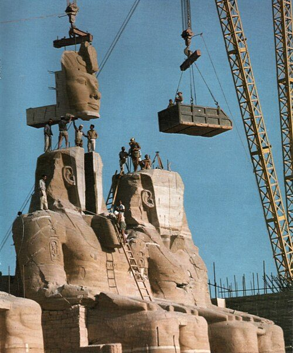

Nel Nilo non ci sono i coccodrilli. Così appare, almeno: non si vedono presso Il Cairo, lungo il delta del fiume, né nascosti fra palme e papiri nelle rive placide che si attraversano risalendo il corso fino a Karnak, Luxor, Edfu, Kom Ombo. Non ci sono proprio, o meglio: non ci sono più.
Ma proseguendo l'itinerario verso Sud, proprio quando quella lacrimuccia si sta per staccare in favore dei rettili smarriti, eccoli che appaiono! Tutti assieme, là dove si apre il Nilo nell'immenso lago Nasser, eccoli d'un tratto a prosperare. C'è da dire che questo lieto fine è prerogativa dei pochi coraggiosi che proseguono il loro cammino inoltrandosi in profondità nella Nubia, ed è precluso ai migliaia di turisti occidentali che percorrono il classico (e meraviglioso) itinerario della crociera sul Nilo, che per forze ha come ultima tappa la cittadina di Aswan.
Ad impedire ai coccodrilli di passare dal Sud al Nord, e alle motonavi cariche di curiosi di compiere il percorso inverso è una delle più grandi infrastrutture costruite dall'uomo: l'Alta Diga sul Nilo di Aswan. Il Nilo, che per millenni ha trasportato da Aswan a Luxor il granito degli obelischi, da Luxor al Cairo l'alabastro dei sarcofagi, dal Cairo al Mediterraneo i tessuti e le spezie destinate all'Europa; lo stesso fiume dall'animo volubile, ma dalla natura magnanima e benefica, che ha regalato a generazioni di uomini la sua fauna e il suo limo, garanzie di prosperità. Al Nilo dedicherò altrove lo spazio e le riflessioni che merita.
La storia della moderna Repubblica Araba d'Egitto è stata fortemente condizionata dalla presenza della diga, al punto che è difficile parlare dell'Egitto contemporaneo senza considerare l'influenza della invadente infrastruttura che conserva nel Sud. Una costruzione lunga tremilaseicento metri, larga novecentottanta (quasi un chilometro) alla base e quaranta sulla sommità, per un'altezza di centoundici metri (il Colosseo, per paragone, si ferma a cinquanta).
A metà del ventesimo secolo l'idea di costruire una diga sul Nilo nei pressi di Aswan non era nuova, gli inglesi avevano già costruito una diga più piccola circa sei chilometri più a Sud della attuale, e si proponeva da tempo di ampliarla. Il vero progetto della Alta Diga però iniziò solo nel 1952, quando l'Egitto si trovava in un periodo di transizione tra i residui dell'occupazione britannica e la prospettiva di un futuro repubblicano.
La Rivoluzione Egiziana del Luglio 1952 aveva destituito il re Faruq, che era percepito come filo-britannico e corrotto, e proclamato un nuovo ordinamento statale, basato su ideali repubblicani e identitari, ma costruito di fatto attorno a due uomini forti: Naguib prima, Nasser poi (eh si, quello del lago). L'Egitto moderno si trovava quindi ancora nel suo stato embrionale, la nuova classe dirigente, arrivata al potere cavalcando la rabbia nei confronti del precedente sovrano, necessitava di legittimazione. I tempi moderni correvano e lasciavano indietro feluche e barchette a remi.
La storia insegna che l'uomo è solito assegnare una potenza simbolica alle grandi infrastrutture. In questi termini possiamo forse affermare che, come le Piramidi unirono l'Antico Regno dimostrando l'autorità divina del Faraone, l'Alta Diga ha svolto un ruolo simile, mostrando ciò che la nuova politica prometteva, in cambio del potere: il progresso.
Nel 1971, anno di inaugurazione della diga, i suoi generatori idroelettrici soddisfacevano da soli la metà della domanda di potenza elettrica dell'intero paese; le piene del Nilo, dopo millenni, erano interamente sotto controllo (dello stato); diecimila chilometri quadrati di deserto promettevano di diventare coltivabili, aumentando di un terzo l'area coltivabile dell'intero Egitto. La modernità ha trasformato l'immaginario del Nilo da dono a risorsa.

Un ecosistema così fragile, però, non è alterabile senza pagarne un prezzo altrove. La Nubia, regione estesa dal Sud dell'Egitto fino al Sudan, è sommersa: il Nilo, bloccato nel suo corso naturale dalla diga a valle, si è espanso in larghezza allagando gran parte della Nubia, dando forma all'attuale bacino artificiale del Lago Nasser. L'estensione totale del lago equivale a circa metà di quella del Libano.
Molti siti archeologici si trovano tuttora sotto decine e decine di metri d'acqua, altri sono stati tratti in salvo. Sono leggendarie nella storia dell'archeologia le operazioni di salvataggio dei monumentali templi di Abu Simbel e quello di File, smontati pezzo per pezzo e ricostruiti ad un'altitudine maggiore, per metterli al riparo dalle acque incombenti. Il limo, dono del Nilo alla terra dei faraoni, con la fine delle inondazioni smette di depositarsi naturalmente nell'entroterra egiziano, e deve esservi portato attraverso delle pompe.
Trarre un giudizio da questa analisi non è nostro dovere: ne emerge invece un quadro complesso, eccezionale per la scala delle forze in gioco, ma coerente con tanti compromessi che lo sviluppo ha richiesto ai territori del mondo.

Al visitatore occidentale curioso, però, non passerà di vista la strana quantità di checkpoint militari da passare prima di giungere al cuore della diga, né i severi sguardi dei militari che lo squadrano ai metal detector. A entrare nella diga sembra di entrare in una zona militare, ed effettivamente lo è: non solo l'Egitto è fortemente dipendente energeticamente dall'infrastruttura, ma ne è legato anche da un fattore più cupo.
L'enorme massa d'acqua, stipata a monte della diga conserva sotto forma di energia potenziale un'enorme forza distruttrice. Il destino di gran parte degli egiziani, compreso quello degli abitanti del Cairo, nel lontano Nord, è vincolato alla tenuta della diga. C'è dell'ironia in questo: nell'aver costruito l'immensa muraglia per affrancarsi dalle potenze straniere in termini di risorse, fornendo però loro una delle armi più devastanti del pianeta.